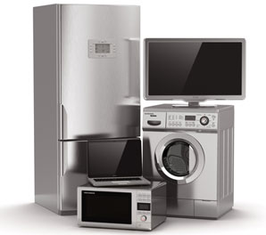

关于我们ABOUT US
- 我们是谁
- 海尔创立于1984年，经过28年创业创新，从一家资不抵债、濒临倒闭的集体小厂发展成为全球白电第一品牌。2012年，海尔全球营业额1631亿元，利润90亿元，利润增幅是收入增幅的2.5倍。据消费市场权威调查机构欧睿国际（Euromonitor）数据，海尔连续四年蝉联全球白色家电第一品牌；在美国波士顿（BCG）管理咨询公司发布的2012年度“全球最具创新力企业50强”中，海尔是唯一进入前十名的来自中国的企业；并且位居消费及零售类企业榜首。
- 选择汉耀
- 海尔创立于1984年，经过28年创业创新，从一家资不抵债、濒临倒闭的集体小厂发展成为全球白电第一品牌。2012年，海尔全球营业额1631亿元，利润90亿元，利润增幅是收入增幅的2.5倍。据消费市场权威调查机构欧睿国际（Euromonitor）数据，海尔连续四年蝉联全球白色家电第一品牌；在美国波士顿（BCG）管理咨询公司发布的2012年度“全球最具创新力企业50强”中，海尔是唯一进入前十名的来自中国的企业；并且位居消费及零售类企业榜首。
- 我们优势
- 海尔创立于1984年，经过28年创业创新，从一家资不抵债、濒临倒闭的集体小厂发展成为全球白电第一品牌。2012年，海尔全球营业额1631亿元，利润90亿元，利润增幅是收入增幅的2.5倍。据消费市场权威调查机构欧睿国际（Euromonitor）数据，海尔连续四年蝉联全球白色家电第一品牌；在美国波士顿（BCG）管理咨询公司发布的2012年度“全球最具创新力企业50强”中，海尔是唯一进入前十名的来自中国的企业；并且位居消费及零售类企业榜首。
